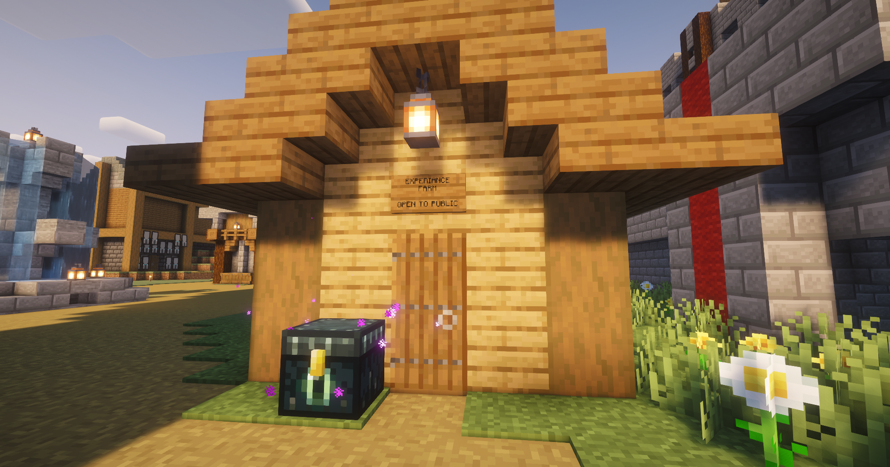
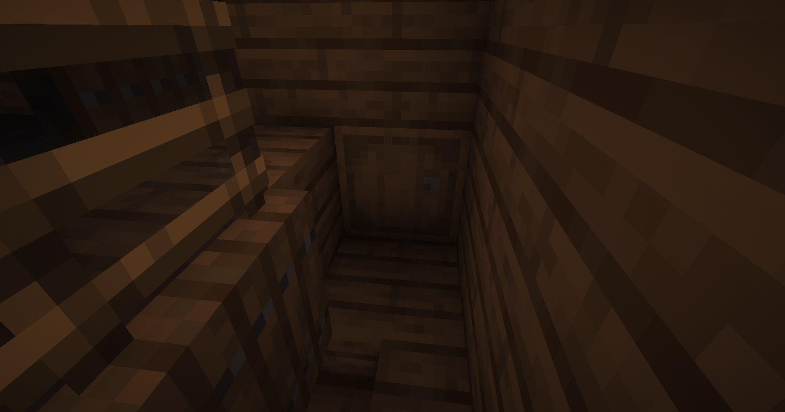
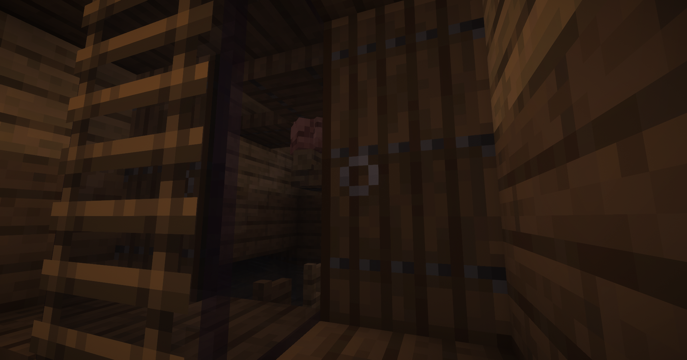
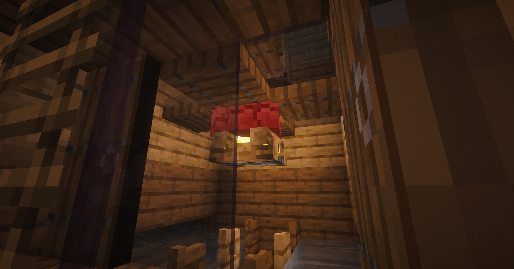
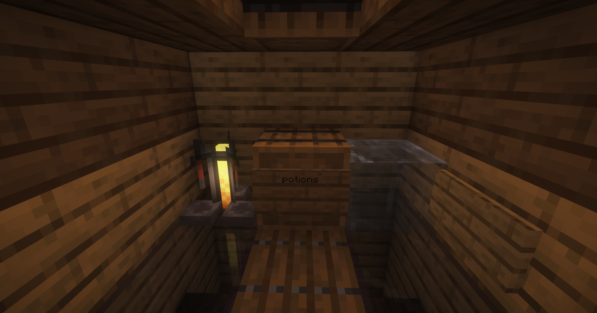
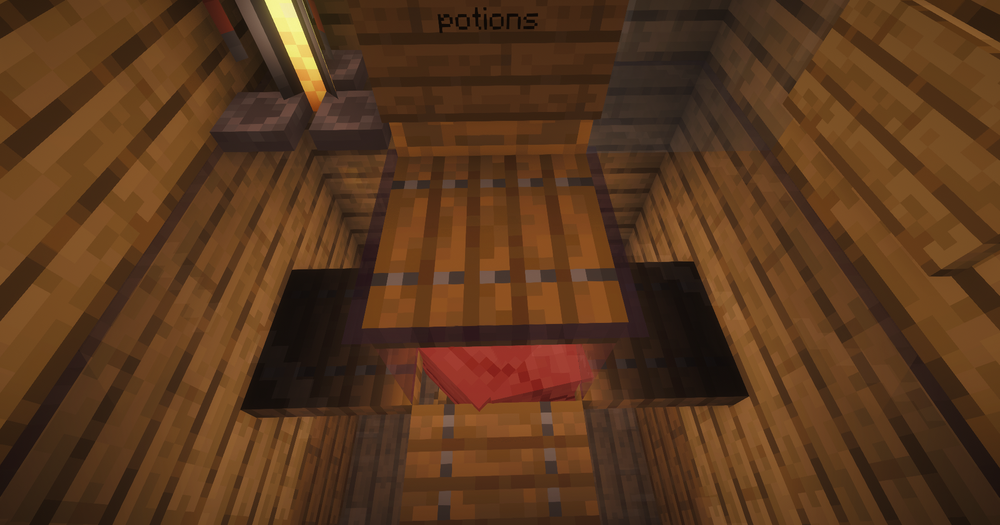
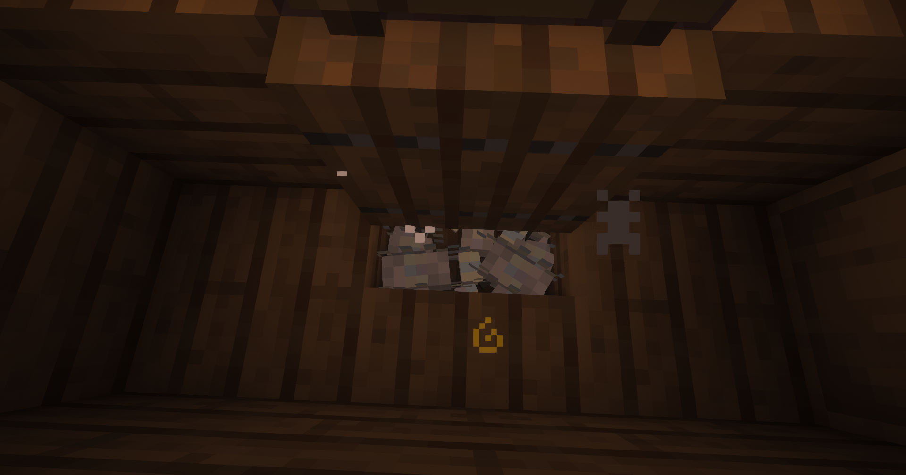

Borrow the farm tools
Take the flint and steel from the lower barrel. A shovel is there too if you need one.
THE ZIGGY EMPIRE ✦ FARM GUIDE
Follow this guide to start the Empire's silverfish farm, collect experience, and leave the campfire safely switched off when you're done.
(176, 104, 1276)
BEFORE YOU START
You'll need a sword to kill the silverfish and a shovel to put out the campfire afterward. The farm's tools are stored in the barrels.
Take the flint and steel from the lower barrel. A shovel is there too if you need one.
Splash the armadillos through the trapdoor. The effect can also affect you, which is okay.
Repair Mending gear, gain enchanting levels, or earn money with the Hunter job.
STEP BY STEP
Keep the lower door closed while the campfire is lit. This lets the farm run as intended.
Go to the lower area of the building and open the barrel. Take the flint and steel, then close the barrel. Turn left and open either door, but don't go inside.

Use the flint and steel to light the campfire inside, then be sure to close the door.


Climb the ladder and take a splash potion of Infestation from the barrel labelled “Potions.” Hold the potion, sneak (hold Shift), and right-click the trapdoor to splash the armadillos below. You can splash yourself too; it's okay if you get the effect.
Infestation can spawn silverfish when an affected player or mob takes damage. Splashing yourself lets you check the remaining duration in your inventory.

Once the armadillos have the effect, go back down the ladder. Silverfish will begin appearing in the collection chamber at the bottom. Use your sword to kill them and collect the experience.

Silverfish experience can repair your tools and armour if they have Mending, help you gain levels for enchanting, and earn money if you have the Hunter job.
As a rough guide, one potion can repair about two tools or take you from level 0 to 35. Results vary.

WHEN YOU'RE DONE
Wait until all silverfish are gone and the armadillos' Infestation effect has worn off before putting out the fire.
Check that no more silverfish are appearing above the campfire. You can also check the effect timer in your inventory if you splashed yourself.
Open the same door and right-click the campfire with a shovel to put it out.
Return the flint and steel and, if borrowed, the shovel to the barrel.
VIDEO WALKTHROUGH
A video walkthrough will be added here when it's ready.